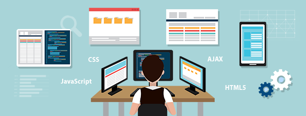
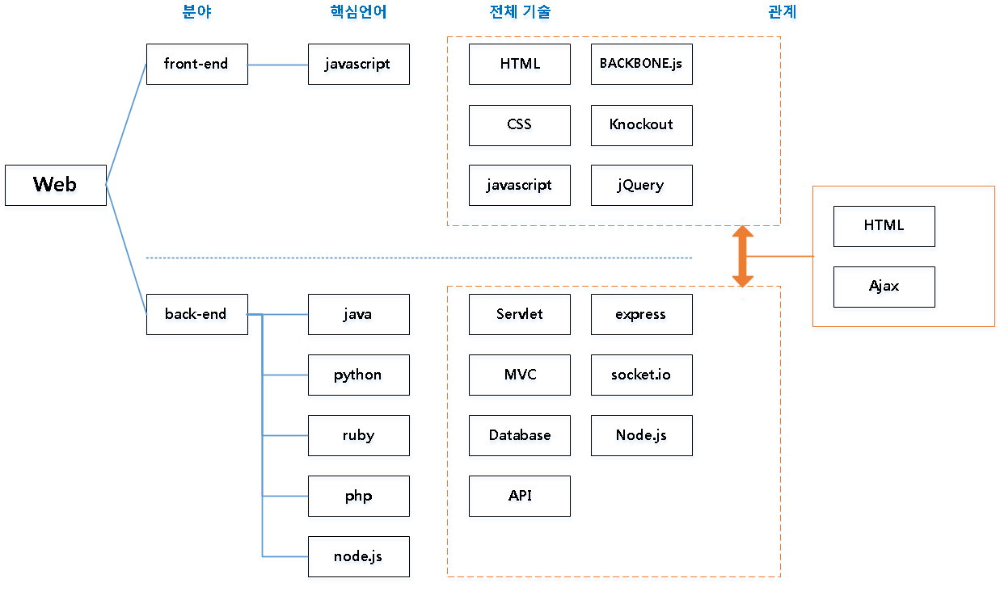
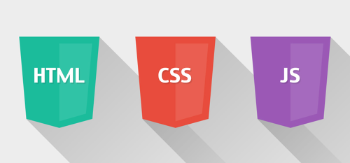

Hello world!
웹 개발의 세계에 오신 것을 환영합니다!

사람들은 웹 기술을 어렵거나 복잡하고 손도 대지 못한다고 생각하는데 전혀 그렇지 않습니다.

웹 개발에는 물론 위 이미지에 나와있듯이, 다양하고 많은 언어와 도구가 존재하지만 큰 틀에서 볼땐 단순히 프론트엔드와 백엔드로 구성된 것이 끝입니다.
프론트엔드는 우리 눈에 보이는 부분, 백엔드는 보이지 않는 부분인데 웹페이지를 구성하는 부분을 프론트엔드라 하고 그 뒤쪽의 서버, 데이터베이스, 알고리즘 등을 백엔드라고 합니다.
프론트엔드는 시각적인 부분인, 콘텐츠와 레이아웃 부분을 담당하고 백엔드는 눈에 보이지만 않을 뿐, 실질적인 페이지의 기능을 담당합니다.
프론트엔드와 백엔드의 중요도를 보자면 백엔드가 더 중요해 보일 수 있지만 기능은 눈에 보여야 하므로 결국 둘 다 중요합니다.
프로젝트 시작
저희는 이번에 우리 일상생활에서 가장 많이 접할 수 있는 기술인 프론트엔드 분야와, 약간의 백엔드 부분을 다뤄보겠습니다.
바로 아래의 Html, CSS, JavaScript를 사용해서요!
